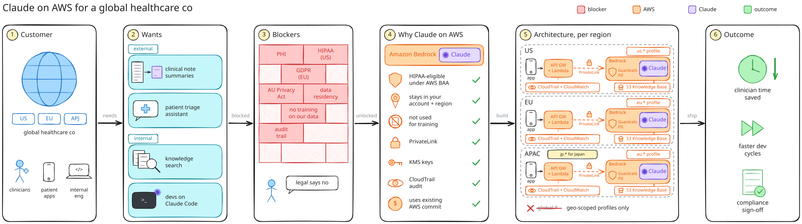
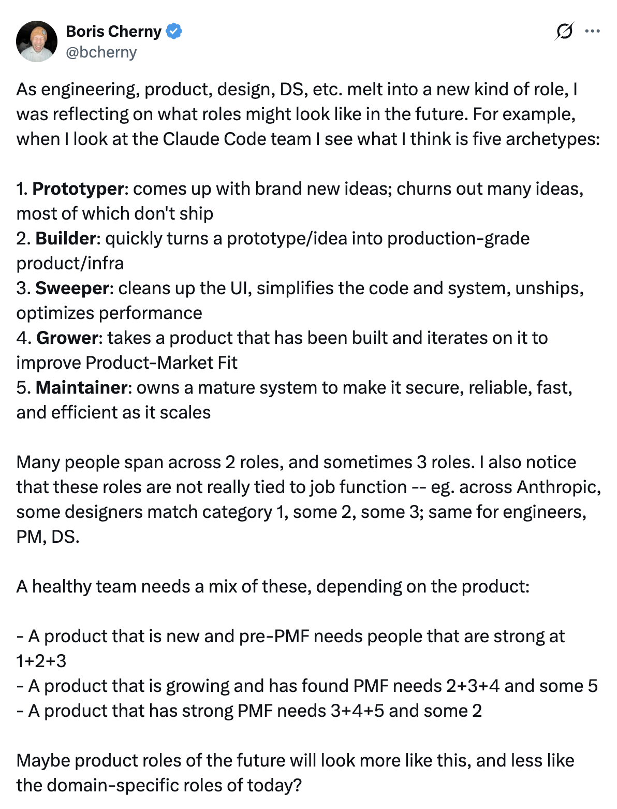

Claude on Amazon Bedrock
Inside your AWS account, alongside Guardrails, Knowledge Bases, and AgentCore
Scale Up: Anthropic x AWS · Session 1
Trends and lessons from the field
Snehanshu Bhaisare
Anthropic Tech Lead, APJ
Amazon Web Services
Session 1 · 2:45 PM
Help people move from trying AI to improving how their team works.
Pick a repeated workflow, define success, and decide where an agent fits.
Why the harness and the data boundary decide what ships.
How AWS customers are transforming their products and businesses
Framing the session
Skills, confidence, incentives, and leaders who make room for change
A useful workflow, clear success measures, review points, and operating rules
Data, models, tools, runtime, security, cost, and observability
Value that holds in production
A gap in any one slows the whole system.
Section 01
Stall 01: the benefit stays with one person
Build confidence, change habits, and help people improve how their team works.
People change · Adapted from Ramp's L0–L3 model
Uses AI occasionally for isolated tasks
What leaders provide
Approved tools and a safe first task
Uses AI in regular work and checks the output
What leaders provide
Role-specific examples, coaching, and time to practise
Creates a reusable workflow for their team
What leaders provide
Data access, permissions, time, and recognition
Builds shared systems that improve how other teams work
What leaders provide
Platform support, governance, evaluations, and clear ownership
Set different targets by role. Most people need confidence using AI; fewer need to build shared systems.
Source: ramp.com/leading-indicators/how-to-build-your-team-to-capitalize-on-aiAdoption by function
Developers work in shared systems with clear inputs, tools, tests, and fast feedback.
IDE → pull request → test → deploy → observe
Adoption resultIndividual use becomes a repeatable team workflow
Sales, marketing, finance, HR, and operations often begin with chat, drafts, summaries, and research.
Prompt → copy output → finish the work manually
Adoption riskThe benefit stays with one person and stalls at personal productivity
Move useful non-engineering cases into shared workflows with data access, an owner, review points, and one metric.
Running an AI-native engineering organisation
Engineers define outcomes, direct agents, and review evidence.
Tests, observability, documentation, and review capacity become the constraints.
AI lets small teams own broader customer outcomes end to end.
Give teams authority and fast feedback; use shared platforms for guardrails.
Section 02
Stall 02: the first workflow has no owner and no number
Pick a useful workflow, define success and review points, and decide where an agent fits.
Choosing the first workflow
It happens often
Daily volume, so small gains add up
Someone owns it
One team willing to change how it works
One number moves
Time to resolve, cost per document, tickets handled without escalation
A person can check the output
At least at first, before it reaches a customer
The data is already reachable
No six-month integration project before you start
Support triage and draft replies
Pulling fields out of documents and invoices
Code review and test generation
Internal knowledge search
The flagship feature that must be perfect at launch
Field principle
“Think big, but start small.”
One workflow. One owner. One metric.
Building effective agents
The steps and order are known
Rules change slowly
Each step has a predictable input and output
The cost of an unexpected action is high
The number or order of steps varies
The model must choose tools or actions
The environment returns useful feedback
Success and stopping conditions are measurable
A person reviews high-impact actions
Start with the simplest design that works. Add model-directed decisions where fixed workflows break down.
Scan for Anthropic's Building effective agents
Section 03
Stall 03: the route doesn't fit the data, cost, or location
Why the harness around the model and the data boundary decide what ships.
Horse and harness
What success means and what the model knows
What it may do, and when a person decides
How reasoning changes the environment
What happened, whether it worked, and when to stop
Model quality matters. Reliability also depends on the harness around it.
Brain versus hands
What makes the agent useful for your customer
Goal and success metric
Domain data, instructions, and skills
Tools, permissions, and approval policy
Evaluations and failure thresholds
Product experience and workflow change
Claude model
Reasoning, planning, and tool selection
Sandbox and tools
Isolated compute, filesystem, shell, and secure connections
Managed services remove platform work. Your advantage comes from domain context, permissions, evaluation, and user experience.
Sources: Anthropic, Scaling Managed Agents; Amazon Bedrock AgentCore harness
Stall 03 · Location
On Bedrock you pick an inference profile, not a Region. The profile decides where processing happens.
Routes across available Regions
Most capacity and usually the lowest price
au. geographic profile
Processing stays in Australia for supported models
Sydney
ap-southeast-2
Melbourne
ap-southeast-4
Single-Region inference is a separate model-specific choice
Current model availability
A Sydney or Melbourne endpoint on Claude Platform on AWS does not mean inference stays in Australia.
Check the model card before you commit. This changes with every launch.
Section 04
AWS customers building agentic AI in production
AWS customer stories
Investigates production alerts and proposes code changes for engineers to review
Anthropic Claude on AWS
215 hours
of manual work saved in three months
Drafts clinical notes, letters, summaries, and follow-up tasks for clinician review
Anthropic Claude on AWS
2M+
consultations supported each week
Supports relationship, serviceability, cashflow, and portfolio decisions with explainable outputs
Anthropic Claude on AWS
3 months
to put the first assistants into production
Session 1 recap
People: the benefit stays with one person
Move useful cases into shared workflows with data access, an owner, and a review point.
Process: the first workflow has no owner and no number
One workflow, one owner, one metric. Use an agent only when the steps can't be fixed in advance.
Technology: the route doesn't fit the data, cost, or location
The harness and the inference profile matter as much as the model.
After the break: the production checklist.
3:10 PM
Back at 3:20 PM
Next: the production checklist. Setting an AI project up so it ships, and measuring it.
Scale Up: Anthropic x AWS · Session 2
Setting an AI project up so it ships, and measuring it
Snehanshu Bhaisare
Anthropic Tech Lead, APJ
Amazon Web Services
Session 2 · 3:20 PM
Three passes, before the first user sees it.
One workflow, one owner, one metric. A canvas with the definition of done, evaluation, and cost per task.
Limits in code, the right route and model, the inference profile for the data, and a person on high-impact actions.
Eval pass rate, cost per completed task, how often reviewers step in, and the one business number.
Generative AI Product Canvas
Start with the user problem. Put evaluation, cost, and pricing on the page from day one.
A shared product plan with a clear problem, technical shape, evaluation plan, and unit economics.
A practical autonomy spectrum
Answer, draft, classify, or summarise
A person directs each turn
Complete one bounded, multi-step task
Approve consequential actions
Work through checkpoints and recover from failure
Review progress and exceptions
Pursue an outcome across sessions with durable state
Set goals, limits, and escalation rules
Potential value rises as the agent completes a larger unit of work.
Cost, drift, ambiguity, and recovery work rise as well.
System design
The same rule should produce the same handling every time.
Permissions and approval gates
Input validation and schemas
Budgets, limits, and stop conditions
Irreversible or regulated actions
Different outputs can still be useful, correct, and safe.
Interpret intent and context
Plan the next step
Draft, classify, or summarise
Choose among approved tools
Put judgement in the model. Keep permissions, limits, and irreversible actions in code.
Choose the surface
Inside your AWS account, alongside Guardrails, Knowledge Bases, and AgentCore
Anthropic's API with web search, files, code execution, and managed agents
Claude apps against your own Bedrock account, governed with your AWS controls
Chat, Claude Code, and Cowork with SSO, user provisioning, spend limits, and audit logs
Choosing a model
Speed
Claude Haiku 4.5
$1 / $5
Triage, classification, and fast low-cost steps
Volume
Claude Sonnet 5.5
$2 / $10
The high-volume default when your evals hold. Global only for now
Start here
Claude Opus 5.5
$4 / $20
Anthropic's starting point for most workloads
Long horizon
Claude Fable 5.1
$10 / $50
Multi-step agents, hard problems, and 1M-token context
Move left or right based on your workload evals, not a generic benchmark.
Prices shown per million input / output tokens on the global inference profile.
Keeping cost in line with value
Cache what repeats
System prompts and shared documents
Pay less to read the same context again
Route by difficulty
Haiku for triage, Sonnet for volume, Opus for hard steps
Set the effort
Use deeper reasoning only where it changes the result
Batch what can wait
Run overnight documents and backfills through batch inference
Cost per completed task, with quality held constant
Measure it
Quality: eval pass rate
Run the same representative scenarios before every prompt, model, or tool change. The model is probabilistic, so test across cases, not one demo.
Cost: cost per completed task
Application inference profiles with cost tags give spend per team or feature in Cost Explorer. Divide by tasks done, not tokens.
Trust: how often reviewers step in
Edits, rejections, and escalations at the human review point. Falling over time is the signal to widen autonomy.
Value: the one number from your canvas
Time to resolve, cost per document, tickets handled without escalation. Agree on the baseline before launch.
Traces in CloudWatch and OpenTelemetry show why a number moved.
From the field · The story

From the field · Demo
A global healthcare enterprise. Clinical workflows across North America, Europe, and APAC, with patient data in play.
PHI and PII, under HIPAA and SOC 2
Inference inside the AWS boundary, with AWS as the processor
Private connectivity and every call in CloudTrail
Europe and APAC health data processed in its own geography
The same rules for the product, developers, and analysts
One design that clears a third-party audit
Product: the Bedrock API with Guardrails and Knowledge Bases
People: Claude Code in the CLI, Desktop, or VS Code, plus Claude Desktop
Residency: us., eu., and au. or jp. profiles on one design
Evidence: IAM, PrivateLink, CloudTrail, and traces in CloudWatch
Vendor review: an AWS service, so it's one word: AWS
Field notes
Claude Code in an Asia Pacific Region returns a 400
It defaults to an apac. prefix. Set ANTHROPIC_BEDROCK_REGION_PREFIX to au or global.
Australian profiles cost about 10% more than global
Use au. where residency matters and global. where it doesn't. Choose per workload.
Anthropic's built-in tools are not on Bedrock yet
Web search, code execution, files, and remote MCP. Need them now? Claude Platform on AWS.
Sonnet 5.5 is global only for now
No au. profile, no single-Region option, and no batch yet. Keep residency workloads on Sonnet 5 or Opus 5.5 with au.
Tag usage before rollout
Application inference profiles carry cost tags, so finance sees spend per team in Cost Explorer.
A Marketplace subscription starts a new Claude organisation
Already have one with Anthropic? Moving it is Anthropic-managed, so plan it before you subscribe.
Recap
People: set expectations by role and give teams time and support to change how they work
Process: pick a repeated workflow with an owner, human review, and one metric
Process: use an agent only when a fixed workflow cannot handle the task
Technology: choose the route, controls, cost, and location for the workload
Scale when people, process, and technology all hold in production
Your next step
Run the Generative AI Product Canvas with your AWS account team on one feature you want in production.
You leave with the problem, the technical shape, an evaluation plan, and the unit economics on one page.
Scan for the canvas workshop
Reference material
Deployment routes, billing detail, controls, Claude Code configuration, and background slides.
Choose the surface
In front of people, or inside your product?
Staff writing, coding, and analysing with Claude points to the apps. Your code calling Claude points to the API.
Does the data need AWS as the operator?
Yes points to the Bedrock routes. If Anthropic processing is fine and you want the newest features first, the Anthropic-operated routes.
Expect both
Many teams run Claude Enterprise for their people and Bedrock for their product, in the same AWS account.
Choose the surface · API
Choose the surface · Apps
Choose the surface · Controls
Sign in with your identity provider
A container you host behind an internal load balancer
OIDC sign-in, so no AWS credentials on every laptop
Usage per user over OpenTelemetry
Identity provider groups decide who gets which model
Per user, per group, or for the whole organisation
Built for people, not pipelines: CI/CD can't authenticate through it, so keep calling Bedrock with IAM there.
Choose the surface
Processing must stay in Australia or one Region
Private connectivity with PrivateLink
Guardrails and Knowledge Bases
More than one model provider behind the same code
Cost per IAM role in your cost and usage report
AWS credits to use
Anthropic's newest features and tools the day they launch
Already built on Anthropic's API. Moving takes a new base URL, a key, and one header.
Keep Bedrock where it already fits
Add Claude Platform on AWS for the workloads that need it. Running both in one account is normal.
Choose the surface
Developers want Claude Code, and the business needs admin controls
Claude Enterprise in AWS Marketplace
The data must stay in our AWS account
Claude on Amazon Bedrock for the product, Claude Desktop on Amazon Bedrock for people
Building agents that need web search, files, and code execution
Claude Platform on AWS
Already on Claude Code with Bedrock, now need SSO and spend caps
Add Claude Apps Gateway
Already paying Anthropic directly
Move it onto the AWS bill at renewal
Appendix · Buying
Each route can appear on the AWS bill. Choose based on data, controls, and required features.
Claude on Amazon Bedrock
Usage appears under Amazon Bedrock
Claude Platform on AWS
Metered through AWS Marketplace
Claude Enterprise
Seats and usage through AWS Marketplace
One commercial front door
Your AWS bill
Start in the Bedrock console or the relevant AWS Marketplace listing.
Confirm current pricing and commitment treatment before committing volume.
Appendix · Buying
Already paying Anthropic directly? Move it onto the AWS bill at renewal, and add Bedrock alongside any time.
Set up cost tags before the first team goes live. Retrofitting them is the painful part.
Appendix · Location · In practice
# Use Bedrock with your AWS credentials export CLAUDE_CODE_USE_BEDROCK=1 export AWS_REGION=ap-southeast-2 # Keep processing in Australia. # Without this, ap-* Regions map to apac. and return a 400 export ANTHROPIC_BEDROCK_REGION_PREFIX=au # Pin the model so the whole team runs one version export ANTHROPIC_DEFAULT_OPUS_MODEL=au.anthropic.claude-opus-5-5
Use global if residency doesn't matter
More capacity and about 10% cheaper
Share policy with a managed settings file
Deployed to each machine. Server-managed settings aren't available on Bedrock.
Send usage to your own stack
OpenTelemetry works on Bedrock. The analytics dashboard doesn't.
Know what you give up
No web search or fast mode on Bedrock today
Workflow or agent
The model handles a task inside a sequence you defined.
Each result becomes context for the next decision.
The application still sets the tools, permissions, approval gates, budget, and stopping conditions.
Agent loop
Goal, context, memory, and tool results
Select a tool, ask for input, respond, or stop
The action changes the environment
Did it make progress, fail, or finish?
Your code controls: tools, permissions, budgets, limits, and stop conditions
Require approval: before costly, irreversible, or customer-facing actions
How roles are changing
Creates options and tests what might work
New products
Turns a promising idea into production software
Every stage
Simplifies the product, code, and system
After shipping
Iterates toward stronger product-market fit
Growth
Keeps mature systems secure, reliable, and efficient
Scale

Further watching · Lenny's Podcast
People, process, and technology